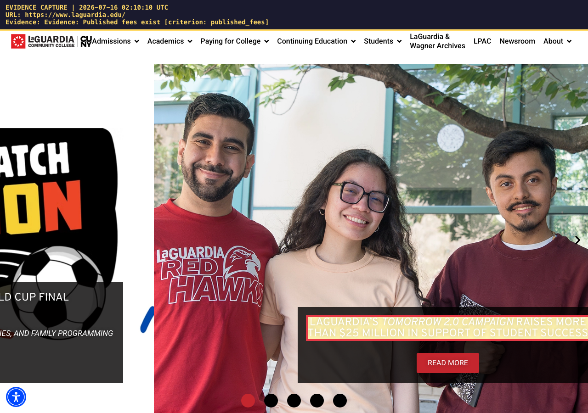
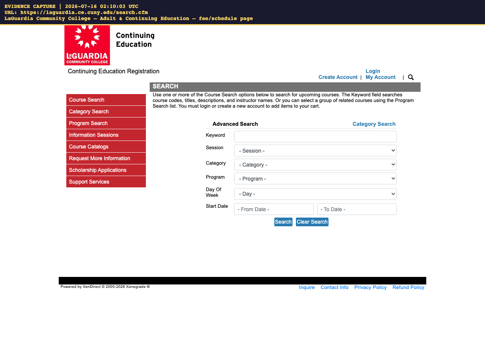
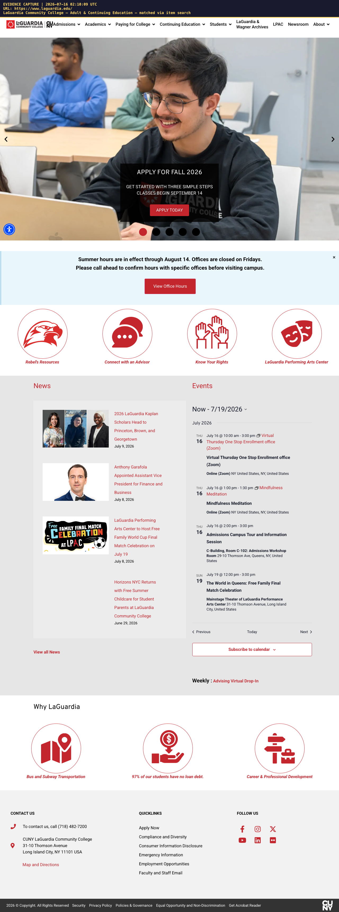

This report was produced by an automated review assistant on 2026-07-16 02:09 UTC. It gathers public-website evidence only. A human reviewer makes the final approve/deny decision.
| Participant | Baruch Z. (age 21) |
| Category | Transition Program |
| Requested | — (not stated on form) |
| Provider / Vendor | LaGuardia Community College – Adult & Continuing Education |
| Website / link | https://www.laguardia.edu/ace/ |
| Fee stated on form | fee per course: $300 per course |
| Review date | 2026-07-16 02:09 UTC |
| Fee on application | Fee found on website | Verdict |
|---|---|---|
| fee per course: $300 per course | $25 | differs |
Program-cap check: Stated fee(s) $300 are within the program caps (max $800).
Automated rule-based check of LaGuardia Community College – Adult & Continuing Education's website found 3 of 5 website-verifiable items, with 1 needing manual review. No AI model was used for this review — a human should double-check any 'Needs Review' items before deciding.
| Status | Criterion | What the website shows | Evidence |
|---|---|---|---|
| ✅ Found | Published fees exist | A published price was found on the page: $25. | https://www.laguardia.edu/evidence/evidence-published-fees-evidence-published-fees-exist.png |
| ✅ Found | Fee sanity-check: ≤ $350 per course / ≤ $800 per month | Stated fee(s) $300 are within the program caps (max $800). | — |
| ⚠️ Needs Review | Program is noncredit-bearing and oriented to skill-building / employment outcomes | Could not confirm noncredit/skill-building framing — please review. | — |
| ✅ Found | Program is NOT in an OPWDD-certified location | No OPWDD-facility language found on the page (inferred from absence). | — |
| ❌ Not Found | Fee-match: published fee is consistent with the fee on the form | The website price ($25) differs from the fee on the form ($300). | — |
| 🏢 Internal — not website-verifiable | Staff background-screening is proven by a letter, not the website — needs document | Flag as "needs document" for the reviewer. | — |
| 🏢 Internal — not website-verifiable | Transition program is approved in the participant's budget | Depends on internal records (budget / Life Plan / documents) — not checkable from the public web. | — |
| 🏢 Internal — not website-verifiable | Program relates to a goal in the participant's Life Plan | Depends on internal records (budget / Life Plan / documents) — not checkable from the public web. | — |
All captures are date-stamped with the capture time (UTC) and URL burned into the image.
evidence-published-fees-evidence-published-fees-exist.png

fullpage-laguardia-community-college-adult-continuing-education-fee-s.png (whole-page record)

fullpage-laguardia-community-college-adult-continuing-education-main-.png (whole-page record)
fullpage-laguardia-community-college-adult-continuing-education-match.png (whole-page record)
